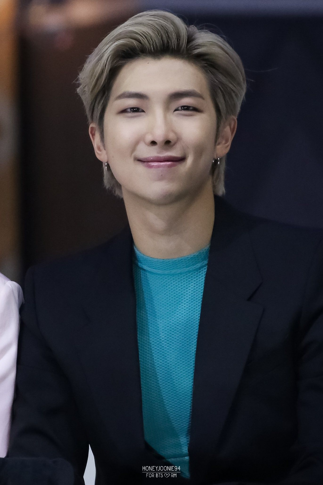
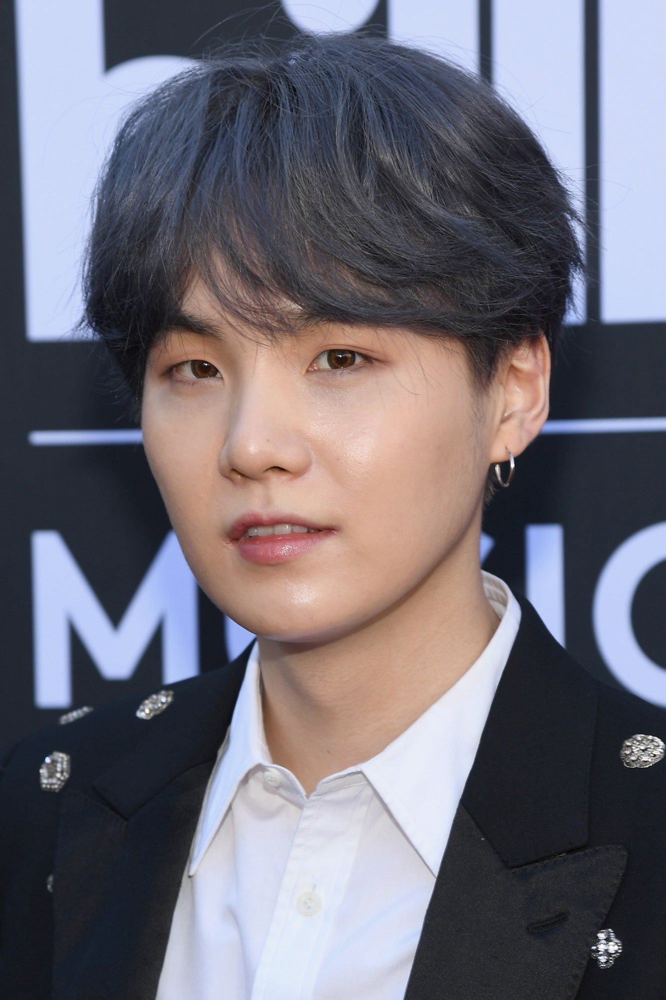
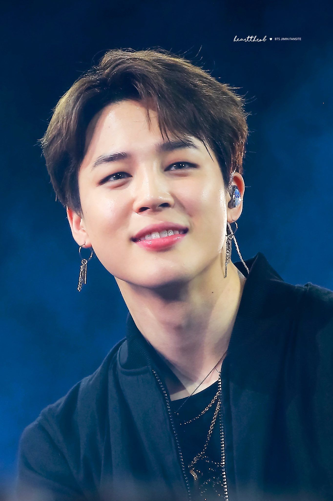

Introduction to BTS

BTS, also known as the Bangtan Boys,
is a seven-member South Korean boy band that began formation in 2010 and debuted in 2013 under Big Hit Entertainment.
The septet—composed of RM, Jin, Suga, J-Hope, Jimin, V, and Jungkook—co-writes and co-produces much of their own output.
Awards: Mnet Asian Music Award for Artist of the Year, MORE Trending
Founded: 2013, Seoul, South Korea
Origin: Seoul, South Korea (2013).
Albums: Map of the Soul: 7, Wings, Love Yourself: Tear, MORE.
BTS's music is also a success because of the subject of their music. While many K-pop songs are about relationships and love, BTS covers subjects that other bands may not like bullying, elitism, and mental health. Their ability to be relatable, humble while still being entertaining is rare.
Introduction to members

BTS consists of seven wonderfully talented boys the oldest being Jin and youngest Jungkook. The oldest to youngest goes like this...Jin, Suga, J-Hope, RM, Jimin, Jungkook.... Kim Taehyung-Vocals. Jungkook-Vocals. Jimin-Vocals. Suga-Rapper. Jin-Vocals. RM-Rapper. J-Hope-Rapper.
Jin(Kim Seokjin)
Kim Seok-jin, also known by his stage name Jin, is a South Korean singer, songwriter, and member of the South Korean boy band BTS since June 2013. Kim was scouted for the group while in university and joined Big Hit Entertainment as an actor, eventually transitioning to a Korean idol.
Born: 4 December 1992 (age 28 years), Gwacheon-si, South Korea
Height: 1.79 m
Hangul: 김석진
Awards: Hwagwan Order of Cultural Merit (2018)
Siblings: Kim Seok-joong
RM(Kim Namjoon)
Kim Namjoon,Kim Nam-joon, better known by his stage name RM, is a South Korean rapper, songwriter, and record producer. He is the leader of the South Korean boy group BTS. In 2015, he released his first solo mixtape, RM.
Born: 12 September 1994 (age 26 years), Yeoui-dong, Seoul, South Korea
Height: 1.81 m
Awards: Hwagwan Order of Cultural Merit (2018)
Siblings: Kim Geong Min
Suga(Min Yooun-gi)
Min Yoon-gi, better known by his stage names Suga and Agust D, is a South Korean rapper, songwriter and record producer. Managed by Big Hit Entertainment, he debuted as a member of the South Korean pop idol group BTS in 2013.
Born: 9 March 1993 (age 27 years), Taejeon-dong
Height: 1.74 m
Full name: Min Yoon-gi
Siblings: Min Geum-jae
J-Hope/hobi(Jung Ho-seok)
Jung Ho-seok, better known by his stage name J-Hope, is a South Korean rapper, songwriter, dancer, and record producer. In 2013, J-Hope made his debut as a member of South Korean boy band BTS, managed under Big Hit Entertainment. J-Hope released his first solo mixtape, Hope World, worldwide on March 1, 2018.
Born: 18 February 1994 (age 26 years), Ilgok-dong, Gwangju, South Korea.
Full name: Jung Ho-seok
Height: 1.77 m
Awards: Hwagwan Order of Cultural Merit (2018)
Jimin(Park Ji-min)
Park Ji-min, better known mononymously as Jimin, is a South Korean singer, songwriter, and dancer. In 2013, he debuted as a member of the South Korean boy band BTS, under the record label Big Hit Entertainment.
Born: 13 October 1995 (age 25 years), Geumsa-dong, Busan, South Korea
Height: 1.74 m
Awards: Hwagwan Order of Cultural Merit (2018)
Siblings: Park JiHyun
Nicknames: ChimChim, Diminie, Dooly, Jiminie, Park Jiminnie